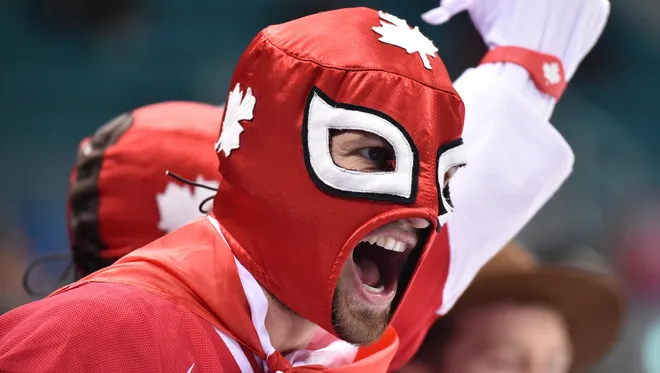

This page highlights fan-made content inspired by the Winter Olympics. Each item below includes a caption and
clear credit to the original creator.
Caption: “AI Winter Olympics” poster concept created with ChatGPT and inspired by the Winter Olympics.
Credit: Created by Me (Cody Crawford).
Caption: Olympic torch skier illustration inspired by Winter Games energy.
Credit: Illustration by kbeis on
iStock.

Caption: Canadian fan Daniel Bergmann cheers before the women’s ice hockey gold medal match at the
PyeongChang 2018 Winter Olympics in Gangneung, South Korea.
Credit: Photo by Andrew Nelles, USA TODAY Sports.
Caption:
Official Olympic Channel promotional video imagining what it would look like if cute babies competed in Winter Olympic sports.
Credit:
Video by the
Olympics (Official Olympic Channel)
.